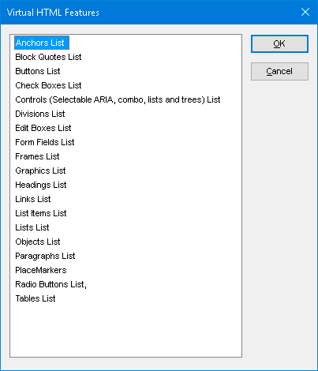

Skjermlesere
Screen reader usage
| Response | # of respondents | % of respondents |
|---|---|---|
| JAWS | 619 | 40.5% |
| NVDA | 577 | 37.7% |
| VoiceOver | 148 | 9.7% |
| Dolphin SuperNova | 57 | 3.7% |
| ZoomText/Fusion | 41 | 2.7% |
| Orca | 36 | 2.4% |
| Narrator | 10 | 0.7% |
| Other | 41 | 2.7% |
JAWS
JAWS (Job Access With Speech) er, i følge WebAIM undersøkelsen Screen Reader User Survey, den mest brukte skjermleseren i 2025 (40.5% av folk som svarte). Den lages av Freedom Scientific og finnes kun på Windows.
Some screen readers provide a count of certain kinds of elements as soon as the page loads. JAWS, for example, typically reads the page title, then says something like "page has 4 regions, 12 headings, and 78 links" (the "regions" are the landmarks). Without having to do anything except go to the page, JAWS users already have a basic sense of how the page is organized.
If JAWS users decide they want to hear a list of any of these types of elements, or if they want to hear lists of other kinds of elements, they can do that by pressing Insert + F3, which brings up the dialog shown below:
The elements list in JAWS allows users to list elements of all of the following kinds:
- Anchors (links)
- Block quotes
- Buttons
- Checkboxes
- Controls (selectable ARIA widget controls, e.g. tabs in a tablist)
- Divisions
- Edit boxes (text inputs)
- Form fields
- Frames
- Graphics
- Headings
- Links
- List items
- Lists
- Objects
- Paragraphs
- Placemarkers
- Radio buttons
- Tables
Noticeably absent from this list is landmarks (or "regions," as JAWS calls them), but users can navigate through landmarks with JAWS using the R key, or they can pull up the list of landmarks using the insert + Ctrl + R key combination. Other screen readers like NVDA and VoiceOver also allow users to list the landmarks.
Even if the user doesn't bring up the elements in lists like this, categorized by type of element, the screen reader will still notify the user of the semantic meaning when arriving at the elements. For example, it will say "Heading level 1, graphic: Wikipedia The Free Encyclopedia."